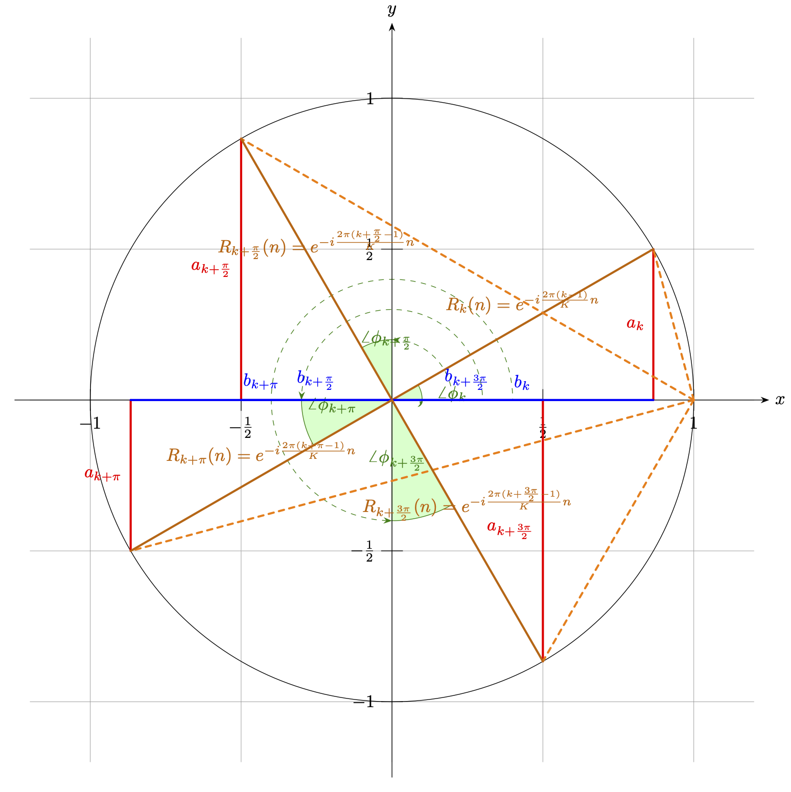

快速傅立叶是对离散傅立叶的数学逼近。其旨在通过有限点的分布拟合，快速逼近离散傅立叶变换结果。
快速傅立叶变换最早由 高斯（Carl Friedrich Gauss，1777 - 1855） 为了解决天文学中有关于智神星（Pallas）和婚神星（Juno）的位姿计算问题，而在 1805 年提出的 [8] [9] 。不过由于种种意料之外的因素，让该论文并没有被及时的发表。因此，论文在当时也没有获得太多的关注。直到计算机开始兴起，有关傅里叶变换等算法的更为低时间复杂度的要求变的迫切，才让后续研究者们又一次察觉到了这一篇文献（以及包括 19 世纪中叶和 20 世纪初的旁类研究）的贡献 [9] 。
1965 年，来自 IBM 普林斯通实验室的 詹姆士·库利（James Cooley） 和来自普林斯通大学的 约翰·图奇（John Tukey） 教授，联合发表了基于快速傅里叶变换的机器实现 [10] ，首次将该算法迁移到了计算机上。他们的研究提出了，通过采用分治法的思想来减少变换所需步数。这成功的使得，多维信号分析所用的傅立叶算法的时间复杂度算法，降至 。促进了数字信号处理（DSP）和计算机图形学的技术更新 [11] 。所以，为纪念两位的贡献，这套程序化的快速傅里叶变换（FFT [Fast Fourier Transform]）方法论 ，被称为 库利-图奇算法（Cooley-Tukey Algorithm） 。库利-图奇算法目标是一维信号，不过高维信号是可以被拆解为低维信号的向量积的，因此 并不影响其泛化 。
在库利-图奇算法提出的时候，分治法已经被广泛的用来做计算机数组求最大值（Max）和排序（Sort）的处理当中。虽然离散的数组和周期信号之间，在信息密度和特征上存在较大差异。但如果考虑到周期信号沿传播维度重复，和傅里叶变换傅里叶基的特征，会发现：
如果将一维信号离散傅里叶变换的有限基底函数族 Fω 构成的傅里叶基看作最小元，那么对其在时域上进行分组重排，也是可行的。从而使信号的一组基底函数基，能够以树状结构分类，并拆解特征表示原信号函数。
这就是库利-图奇算法的关键，在后续的算法的演进过程中逐步被提炼，形成了时域抽取这一核心概念 [11] 。
快速傅里叶变换的核心 - 时域抽取（DIT [Decimation-in-Time]）
时域抽取（DIT [Decimation-in-Time]）是从时域（TD [Time Domain]）对一维信号进行可逆解构的一种数学工具。 它的工作流包含有两个阶段：
分组离散傅立叶（Grouped DFT） 和 旋转因子转换（Rotation Factor Convert） ；
时域抽取第一步 - 分组离散傅立叶（Grouped DFT）
分组离散傅立叶（Grouped DFT） 是指，在信号的单个周期 T 内，以等间距有限次取 个原始离散采样后。将周期内所有采样点信息以 step=KT=N 的步长等分，得到 K 组顺序连续的子采样分组，依照组别记为样本子集 [S1,S2, ... ,SK] 。每组子集都有 Sk∈[S((k−1)⋅N), S(k⋅N)] 的样本取样区间。
此时，记组内索引为 n ，有 n∈[1, N] 。按照顺序从各组中，取组内索引位置为 n 的元素，组成包含数据量为 Fωn 的基底函数 Fωn 的波峰数组。可以逐个拟合，得到一组当前一维信号的有限基底函数族 Fω=[Fω1,Fω2, ... ,FωN] ，记为当前解的最小傅立叶基。根据一维离散傅立叶变换有：
Fω=[Fω1,Fω2,f^(ω)=t=0∑Tf(t)⋅e−iωt ... ,FωN]T=NK⇔ f(t)=K1ω0∑ωNf^(ω)⋅Fω(t)
又因 ωn=T2πn ，强度系数 f^(ω) 与 f(t) 的关系，可以被转换为 f^(n) 与 f(t) 的关系：
f^(ω)=t=0∑Tf(t)⋅e−iωtf(t)=K1ω0∑ωNf^(ω)⋅Fω(t)f^(n)=t=0∑Tf(t)⋅e−iT2πnt→f^(n)=t=0∑Tf(t)⋅e−iT2πnt→f(t)=K1n=1∑Nf^(n)⋅Fω(t)⇔f(t)=K1n=1∑Nf^(n)⋅Fω(t)
带入 K 分组情况（ T=NK ），上式可化为：
f^(n)=k=1∑K(k−1)N∑t=kNf(t)⋅e−iT2πnt⇔f(t)=N1n=1∑Nf^(n)⋅Fω(t)
即强度系数 f^(n) 存在展开式：
f^(n)=k=1∑K(k−1)N∑t=kNf(t)⋅e−iT2πnt=t=1∑Nf(t)⋅e−iT2πt⋅n+t=N+1∑2Nf(t)⋅e−iT2πt⋅n+ ... +(K−1)N+1∑t=KNf(t)⋅e−iT2πt⋅n+ f(0)=t=1∑Nf(t)⋅e−iT2πt⋅n+t=1∑Nf(t+N)⋅e−iT2π(t+N)⋅n+ ... +t=1∑Nf(t+(K−1)N)⋅e−iT2π(t+(K−1)N)⋅n+ f(0)=k=1∑Kt=1∑Nf(t+(k−1)N)⋅e−iT2πtn⋅e−iK2π(k−1)n+ f(0)
要点就出现在这里，此时，由于有限基底函数族 Fω=[Fω1,Fω2, ... ,FωN] 的拟合样本选取自各个分组的对应角标数据，则显然任意 Fωi 的周期都有 Ti=ωi2πn≥N 且必然有 TimodN=0 。另外， f(0) 信号初相可以直接取 f(0)=0 ，而不影响结果。因此，强度系数 f^(n) 关于 k 的展开式能进一步精简为：
f^(n)=k=1∑K(t=1∑Nf(t+(k−1)N)⋅e−iT2πtn)⋅e−iK2π(k−1)n=k=1∑Ke−iK2π(k−1)n⋅((k−1)N∑t=kNf(t)⋅Fω−1(n))
记 f^k(n)=∑(k−1)Nt=kNf(t)⋅Fω−1(n) ，则 f^k(n) 即为分组样本子集 [S1,S2, ... ,SK] 在自己的分组样本区间 Sk∈[S((k−1)⋅N), S(k⋅N)] 内，进行离散傅里叶变换的分组强度系数结果。而 e−iK2π(k−1)n 在样本顺序 n 给定时，只与所处分组的组序 k 有关，且本身在三角函数空间表现为 n(k−1) 的角度固定值，所以我们记其为旋转因子（Rotation Factor） Rk(n)=e−iK2π(k−1)n 。
将 f^k(n) 、 Rk(n) 带入 f^(n) ，则 f^(n) 最终表现为：
R1(n)f^(n)f^(n)=1=k=1∑KRk(n)⋅f^k(n)=R1(n)⋅f^1(n)+R2(n)⋅f^2(n)+ ... +RK(n)⋅f^K(n)=f^1(n)+R2(n)⋅f^2(n)+ ... +RK(n)⋅f^K(n)
上式就是时域抽取（DIT）有关分组离散傅立叶（Grouped DFT）的通用完整过程。单从公式来看，由于切割了样本集，我们只能通过分组离散傅立叶（Grouped DFT）直接求得原一维信号前 N 个信号量的傅里叶解。反而因为样本不足的问题，无法直接求得剩余的 (K−1)N 个信号量。
那么我们大费周章的这么做有什么用处呢？原因就在于旋转因子间是存在关系的。
时域抽取第二步 - 旋转因子转换（Rotation Factor Convert）
这个问题，需要从复变函数的三角函数特性来回答。记 Rk(n) 变换到三角函数域，其实部为 ak ，虚部为 bk 。则 Rk(n) 可以表示为：
Rk(n)=e−iK2π(k−1)n=ak⋅cos(K2π(k−1)n)+i⋅bk⋅sin(K2π(k−1)n) dt
依此，取 ak 为 y 轴、 bk 为 x 轴。我们假设分组 K=2m ，信号周期 T=2π⋅M 且 Tmod2π=0 ，有此时步长 N=2m−1π⋅M 。为便于说明，我们取 M=1 ， m=1 ，且 n=6π=∠30∘ 来进行绘制。实际上 n 只能取 [1, N] 的整数，但那样会不便于图示，这里取固定角并不影响后续结论。则 Rk(n) 在 akbk 构成的平面坐标系上有如下取值范围：

图 1.1.3-1 旋转因子的三角函数系取值演示
在图像表示下 Rk(n) 的特性更易察觉，当分组 K=2m 且 m≥1 取整时, 单个 2π 周期内，以 N=K2π 可以分为 2m−1 组。每组分组都包涵两个子样本集 [Sk ,Sk+2m−1] ，此时，这两个字样本集旋转因子原点对称，有 Rk(n)=−Rk(n+π)n∈[K2π(k−1), K2πk] 。而对于信号 M>1 时，间隔为 2π 的分组有 2M 组，且旋转因子取值相同，即 Rk(n)=Rk+2π⋅M(n) 。
如果我们取 K=2 ，即 m=1 ，对整体信号的 T 个样本分为两组，两组原点对称有：
f^(n)f^(n+π)=f^1(n)+e−iπn⋅f^2(n) =f^1(n)+R2(n)⋅f^2(n)=f^1(n)+e−iπ(n+π)⋅f^2(n)=f^1(n)−R2(n)⋅f^2(n)
如果我们取 K=4 ，即 m=2 ，对整体信号的 T 个样本分为四组，间隔两两原点对称，即相邻组间实虚轴反转，有：
Rk(n+2π)=[(k−1)%2]⋅(−1)k−1⋅Rk(n)+[(k−1)%2+1]⋅(−i)k−1⋅Rk(n)
则 f^(n) 有 n∈[0, 2π] 范围的表达式：
f^(n)f^(n+2π)f^(n+π)f^(n+23π)=f^1(n)+ R2(n)⋅f^2(n)+ R3(n)⋅f^3(n)+ R4(n)⋅f^4(n)=f^1(n)−iR2(n)⋅f^2(n)− R3(n)⋅f^3(n)+iR4(n)⋅f^4(n)=f^1(n)− R2(n)⋅f^2(n)+ R3(n)⋅f^3(n)− R4(n)⋅f^4(n)=f^1(n)+iR2(n)⋅f^2(n)− R3(n)⋅f^3(n)−iR4(n)⋅f^4(n)
不论上述哪一种分组方法，我们都可以将求解范围从有限子集 Sk 中 n∈[K2π(k−1), K2πk] 的离散傅立叶结果，拓展到完整信号周期 T 。而只需要求任意一有限子集 Sk 的傅立叶基即可。
根据 K=2m 的不同取值，时域抽取（DIT）过程的时间复杂度，通过计算分片耗时，能够简单得到为 O(KK−1n⋅log2mn)=O(K⋅2m−1K−1n⋅log2n) 。
显然，O∣K=2=O(21n⋅log2n) 、 O∣K=4=O(83n⋅log2n) 虽然分组间耗时差异不大，但相较于直接对一维信号使用离散傅里叶变换（DFT）的 O(n2) 耗时来说，直接减少了一个数量级。这即是快速傅立叶的 “快”。
对于 K 取不同值时的时域抽取（DIT），为了做区分，根据 K 值的不同被分别称为 双模时域抽取（Radix-2 DIT） 和 四模时域抽取（Radix-4 DIT） 。同理，我们将 K=2 时的库利-图奇算法称为 双模快速傅里叶变换（Radix-2 FFT），将 K=4 时的库利-图奇算法称为 四模快速傅里叶变换（Radix-4 FFT）。两者差异如上，主要即是在划分导致推算上的不同。
至于为什么快速傅里叶变换又被称为蝴蝶法这点。则和经过时域抽取（DIT）处理后，有限基底函数族 Fω=[Fω1,Fω2, ... ,FωN] 和对应强度系数 f^(ω) 构成解的实部 a^ω 与虚部 b^ω ，与 ak 、 bk 和分组 f^k(n) 的换算方式有关。
时域抽取中傅里叶基的处理 - 交叉求值与“蝴蝶”的由来
【WIP】